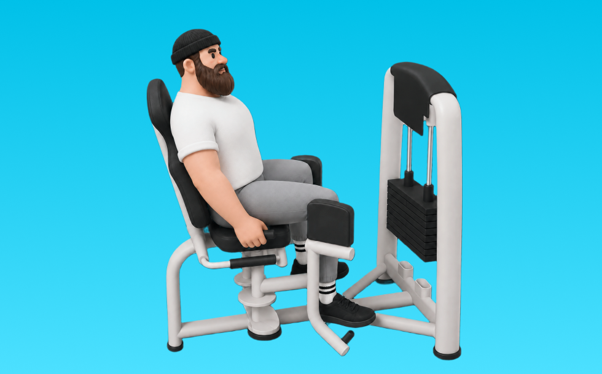

ヒップアブダクション

ヒップアブダクションとは、マシンを使って「股関節を伸ばす」動作で臀部外側（中臀筋など）を鍛える種目です。軌道が安定して狙った部位に効かせやすいのが特徴で、反動を抑えてコントロールしながら反復します。股関節の安定とヒップラインの改善が期待できます。
- 対象部位
- 脚
- 器具
- マシン
- 記録形式
- 重量・回数
- 別名
- 外転マシン
YouTube動画
-
ヒップアブダクション、ちゃんとお尻に効かせられてますか？みんなやってる間違ったやり方
-
【アブダクター】ジムでのお尻まわりトレーニング入門編！アブダクション・アダクション
-
ヒップアブダクション/アウターサイの使用方法【マシントレーニング解説】
-
美尻完成へ！ヒップアブダクションで未発達の筋繊維が効きまくる！【最強尻トレ⑥/新・バズーカ岡田チャンネル】 #バズーカ岡田
-
ヒップアップ！腰痛対策に！ジムトレ「アブダクション」の効果的な使い方
-
【ジムトレ】ぷるぷる内もも撃退！「 アダクション」 マシンの基本の使い方解説〜内ももに効かせるポイント・初心者おすすめ〜
-
ヒップアダクションの基本的なやり方!! 内ももをトレーニングする基本種目! FT325使用!
-
【ヒップアブダクション】お尻の横に確実に効くコツを自重＆マシン別に解説
-
レッグプレスで超美尻！お尻だけにピンポイントで効かせるテクニックがヤバすぎた
-
【エニタイムフィットネス】ジムのマシンで出来るヒップアップ種目4選【筋トレ】
YouTubeショート
-
ヒップアブダクション
-
ヒップアブダクションの正しいフォーム解説！効率よくお尻に効かせる方法 #shorts
-
【サイドライイング・ヒップアブダクションの正しいやり方】伸ばした脚をワイパーが如く動かそう！｜Training Movie 100｜Tarzan
-
ヒップアブダクションの使い方
-
お尻パンッパンになるアブダクション追い込み法🍑 #筋トレ女子
-
ヒップアブダクション！ヒップアップしたいならみて#筋トレ女子
-
【バンドアブダクション】これ見るだけでフォーム攻略 #ダイエット #トレーニング #むくみ改善 #下半身トレーニング #脚痩せ
-
【ヒップアブダクションの正しいやり方】体がふらつかない！ お尻のインナー強化｜Training Movie 100｜Tarzan Web
-
#下半身ダイエット #宅トレ女子 #桃尻トレーニング #美尻トレーニング #ヒップアップ
-
このマシン見つけたら真似してみて！ #尻トレ #ジムトレーニング #マシントレーニング #筋トレ動画 #トレーニング動画 #gymworkout #workoutvideo
-
ヒップアブタクター マシンの使い方
-
お尻トレーニングのヒップスラスト🏋️♀️これだけはやめてほしいエラーはこちら！
-
【ヒップアップ効果】ヒップスラストは脚の位置と身体の姿勢で効く部位が違います。ワークアウトが無駄にならないようにポイントを押さえましょう💥#shorts #筋トレ #ダイエット #健康
-
太ももの横にあるお肉をスッキリする方法✨
-
【ヒップスラスト（スミスマシン）】これ見るだけでフォーム攻略 #ダイエット #トレーニング #むくみ改善 #下半身トレーニング #脚痩せ
-
【58日目】10日間ヒップアップ検証で一番効いたのはこのトレ！#ヒップアップ #アラフォーダイエット
-
【ゴムバンドで尻トレ🔥】#こことれ🎈 『ドンキーキック』挑戦者大募集中✨ヒップアップで足長効果にも◎ #shorts #筋トレ #ダイエット
-
【筋トレ女子】正しいブルガリアンスクワットのやり方
-
自宅で出来るバンドを使ったエクササイズ！尻トレの最高峰！！ヒップアブダクション
-
ブルガリアンスクワット！お尻に効かせる方法と前ももに効かせる方法🫶🏽
-
正しいルーマニアンデッドリフト4つのポイント #筋トレ
-
ヒップリフトが効かない！3つの落とし穴！！#ヒップアップ #尻トレ
-
ダイエットにお勧め！レッグプレスで鍛え分ける！ #shorts
-
【ジムあるある】使い方がわからないマシンTOP3#ジムあるある#あるある動画#あるあるネタ#フィットネス女子
-
🔥 ヒップアブダクション（横向きver.）解説 🔥
-
【サイドプランク（膝付き） with ヒップアブダクション】
-
アダクションで追い込んだ後急に拷問器具と化す様子 #shorts
動作方法
- 対象部位の力を抜かずに構える
- 反動を使わず、可動域を丁寧に使う
- 戻し動作をゆっくり行う
動作ポイント
- 可動域を急に狭めない
- 対象部位の緊張を保つ
ワンポイントアドバイス
- ウォームアップで股関節と足首を動かす
- 高重量の日はセーフティ設定を確認する
目的別回数設定
目的や体力に応じた一般的な目安です。無理のない範囲で調整してください。
- 筋力アップ
- 1〜5回
- 筋肥大
- 6〜12回
- 持久力アップ
- 13〜20回
YouTube動画について
動画はYouTubeの公開情報をもとに表示しています。内容は投稿者によるもので、Biggrによる監修ではありません。
アプリを入手
筋トレやトレーニングの記録はBiggrにお任せください。今すぐ無料で使い始められます。